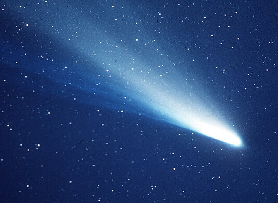

Asteroids, Comets, and Dwarf Planets
Asteroids are small, rocky objects that revolve around the Sun that have a irregular shape. Despite their small size, they can be dangerous if they come too close to Earth. In fact, scientists estimate that a large asteroid may have hit Earth a long time ago and because of it the dinosaurs became extinct. There are two main ”belts“ of asteroids in the Solar System: The Asteroid Belt and the Kuiper Belt. The Asteroid Belt is located in between the orbits of Mars and Jupiter, and contains the most asteroids. This main asteroid belt holds more than 200 asteroids larger than 60 miles (100 kilometers) in diameter. Scientists estimate the asteroid belt also contains more than 750,000 asteroids larger than three-fifths of a mile (1 km) in diameter and millions of smaller ones. The Trojan asteroids are the ones that got caught by Jupiter’s gravity and lies in its orbital path. The Kuiper Belt is located past Neptune’s orbit, which also contains lots of asteroids and mainly dwarf planets, which we will learn about later. The average temperature of the surface of a typical asteroid is minus 100 degrees F (minus 73 degrees C). Asteroids have stayed mostly unchanged for billions of years — as such, research into them could reveal a great deal about the early solar system.
20.

Comets, also known as dirty snowballs, are icy bodies that release gas and dust. Astronomers think comets are leftovers from the gas, dust, ice and rocks that initially formed the solar system about 4.6 billion years ago. Comets orbit the sun, but most are believed to inhabit in an area known as the Oort Cloud, far beyond the orbit of Pluto. The nuclei of most comets are thought to measure 10 miles (16 kilometers) or less. Some comets have comas that can reach nearly 1 million miles (1.6 million km) wide, and some have tails reaching 100 million miles (160 million km) long. Comets have two tails: a dust tail and an ion tail. The dust tail is created by the radiation from the Sun pushing dust particles from the coma of the comet. The ion tail is created by charged particles from the Sun which convert some of the comet's gases into ions. The most famous comet is the Halley’s Comet, which becomes visible to the naked eye every 76 years when it nears the Sun.
21.
Dwarf planets are worlds that are too small to be considered full-fledged planets, but too large to fall into smaller categories. Astronomers estimate that there could be as many as 200 dwarf planets in the solar system and Kuiper Belt. The International Astronomical Union defines a planet as being in orbit around the sun, has enough gravity to pull its mass into a rounded shape (hydrostatic equilibrium), and has cleared its orbit of other, smaller objects. This last criterion is the point at which planets and dwarf planets differ. A planet’s gravity either attracts or pushes away the smaller bodies that would otherwise intersect its orbit; the gravity of a dwarf planet is not sufficient to make this happen. The first dwarf planets discovered include Pluto, Ceres, Eris, Makemake, and Haumea. Of all these Ceres is the only dwarf planet that is in the Asteroid Belt rather than the Kuiper Belt.
Pluto:
22.

Ceres:
=23.
Eris:
24.
Makemake:
25.
Haumea:
26.
© Akshay Ramasubramanian 2017